Cadastrar Documento de Procedência Interna
Após a validação da digital o sistema apresenta a tela Cadastrar Documento exibindo a aba Dados Gerais. Observe que alguns campos são obrigatórios (Veja Nota 1):
Cadastrar Documento - Aba Dados Gerais
Informações para cadastro de documento - Aba Dados Gerais:
Digital: |
Número da digital do documento |
NUP: |
Número único de protocolo vinculado à digital informada. |
Grau de Acesso: |
Grau de acesso que permite ou não a visualização do documento |
Tipo: |
Padrão de formatação da documentação. Por exemplo: memorando, ofícios, cartas e etc |
Data do Documento: |
Data de produção do documento |
 Preenchendo a aba Dados Gerais do cadastro de documento!!
Preenchendo a aba Dados Gerais do cadastro de documento!!
Selecionando o grau de acesso do documento na lista para preenchimento do campo Grau de Acesso
Selecionando o tipo de documento na lista para preenchimento do campo Tipo
Clicando no ícone Calendário
Selecionando a data para preenchimento do campo Data do Documento
 para apresentar a próxima aba:
para apresentar a próxima aba:Aba Dados Gerais - clicando no botão Próxima
Após preencher a aba Dados Gerais e clicar no botão Próxima, o sistema apresenta a aba Origem/Destino: Observe que alguns campos são obrigatórios (Veja Nota 3):

Cadastrar Documento - Aba Dados Gerais
Informações para cadastro de documento - Aba Origem/Destino:
Origem:
Procedência: |
Procedência do documento a ser cadastrado. No caso: Procedência interna |
Tipo de Pessoa: |
Tipo da pessoa de acordo com a procedência do documento. No caso da Procedência Interna: Unidade Organizacional |
Nome: |
Nome das unidades internas do ICMBio |
Número: |
Os documentos de procedência interna ainda não possuem número |
Documento sem número: |
Documentos que npossuem número |
Número automático: |
Documentos que devem ter seu número gerado de maneira automática |
 Preenchendo a Origem do cadastro de documento!!
Preenchendo a Origem do cadastro de documento!!

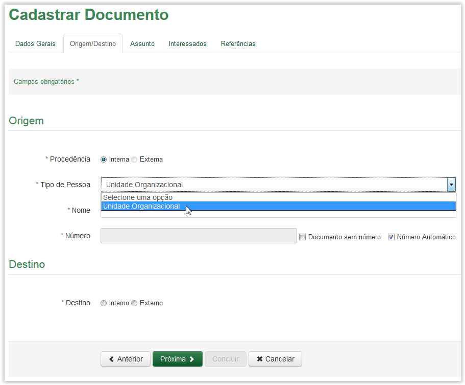
Campo Tipo de Pessoa - Unidade Organizacional
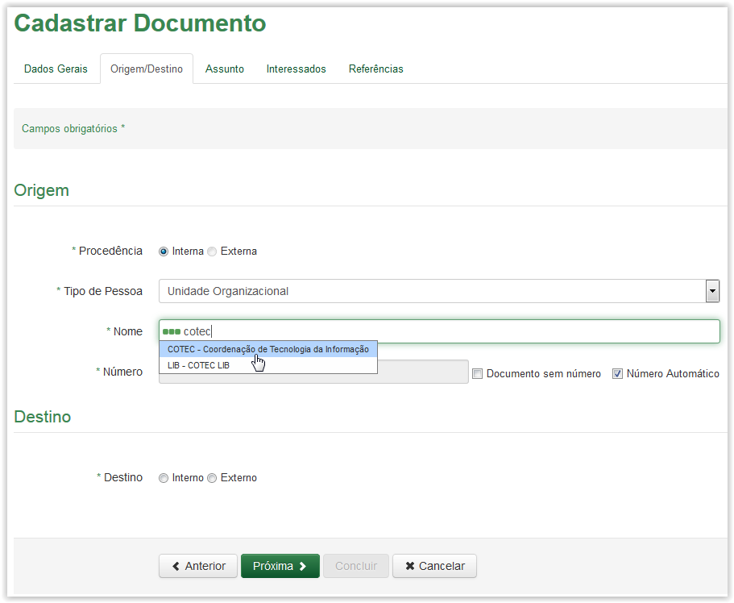
Selecionando um nome na lista para preencher campo Nome

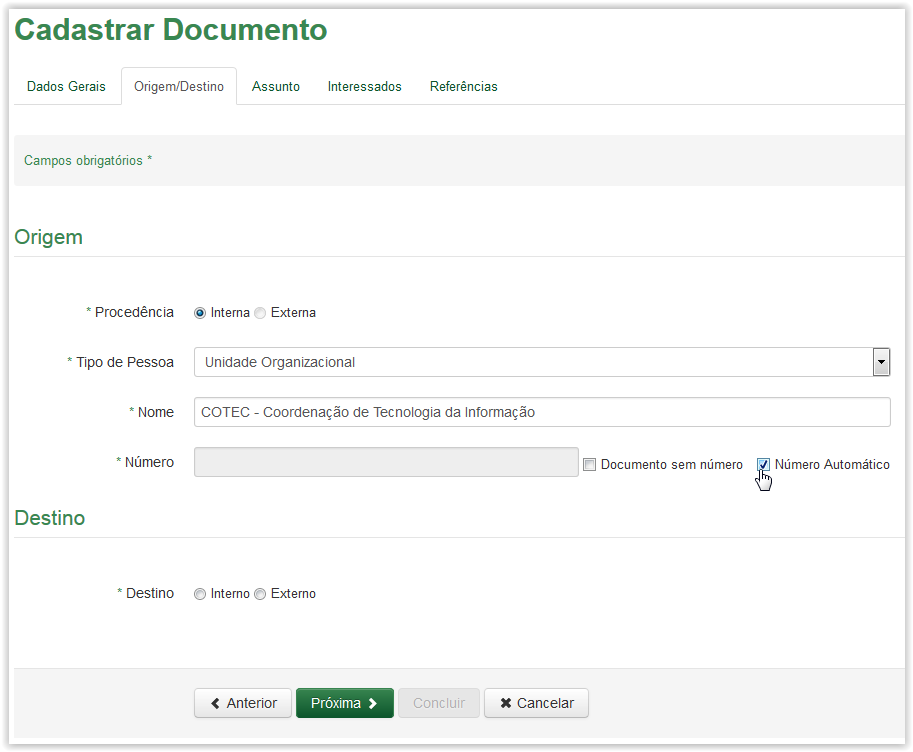
Selecionando a opção Número Automático
Após preencher os campos sobre a Origem do documento, selecione a opção de Destino do documento: Observe que alguns campos são obrigatórios (Veja Nota 4):
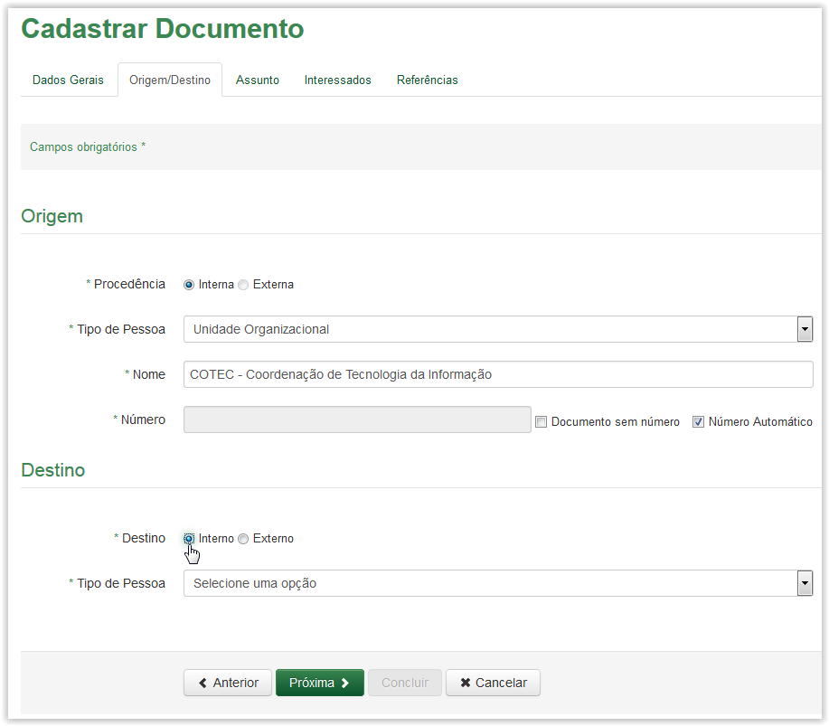
Selecionando o Destino do documento
Informações para cadastro de documento - Aba Origem/Destino:
Destino Interno:
Destino: |
|
Tipo de Pessoa: |
|
Nome: |
|
Encaminhado para: |
|
Cargo: |
 Preenchendo o Destino Interno do cadastro de documento!!
Preenchendo o Destino Interno do cadastro de documento!!
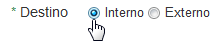

Selecionando o Tipo de Pessoa
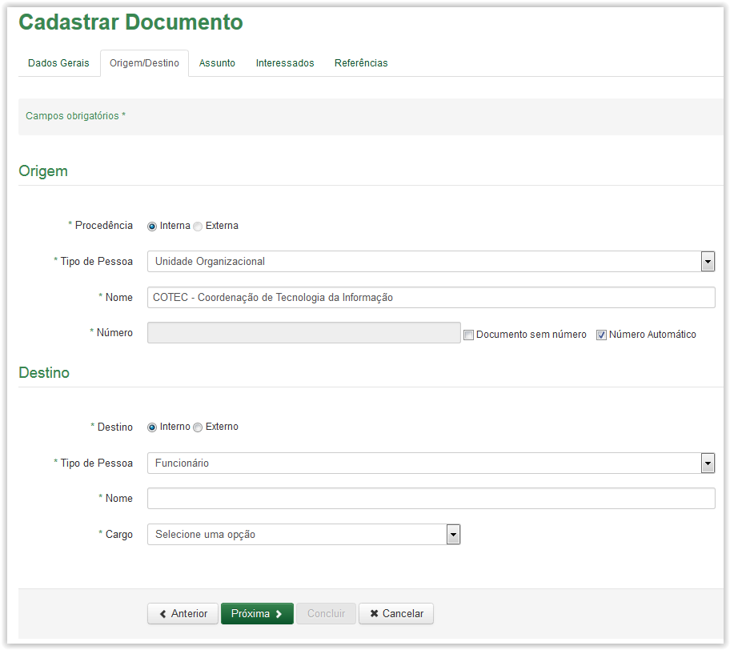
Após selecionar o Tipo de Pessoa como Funcionário, o sistema apresenta os campos Nome e Cargo

Após selecionar o Tipo de Pessoa como Unidade Organizacional, o sistema apresenta os campos Nome, Encaminhado Para e Cargo

Selecionando um nome na lista do campo Nome quando o Tipo de Pessoa é Funcionário
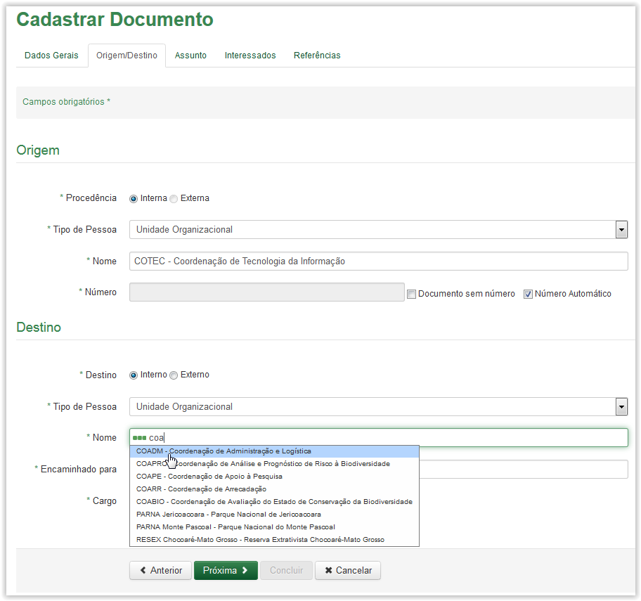
Selecionando um nome na lista do campo Nome quando o Tipo de Pessoa é Unidade Organizacional

Selecionando um nome na lista do campo Encaminhado Para quando o Tipo de Pessoa é Unidade Organizacional
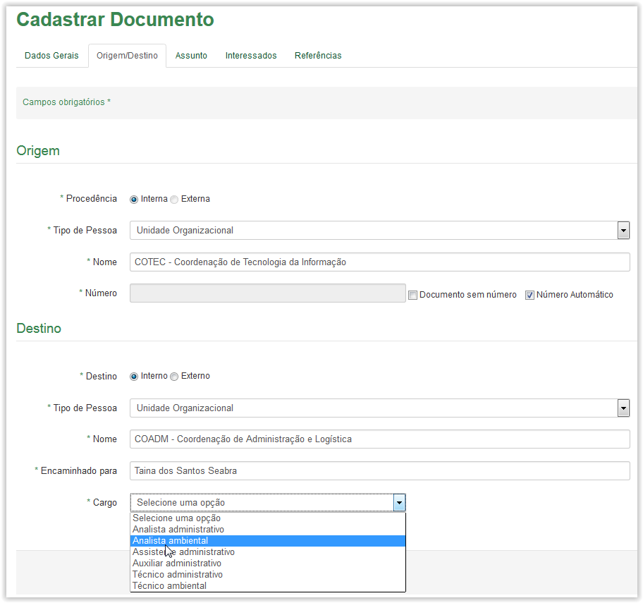
Selecionando um cargo na lista do campo Cargo quando o Tipo de Pessoa é Unidade Organizacional
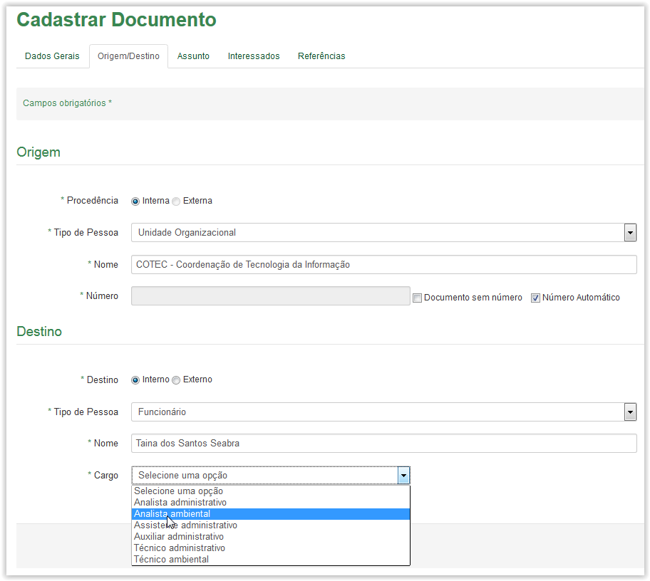
Selecionando um cargo na lista do campo Cargo quando o Tipo de Pessoa é Funcionário
para apresentar a próxima aba:
Aba Origem/Destino - clicando no botão Próxima
Após preencher os campos sobre a Origem do documento, selecione a opção de Destino do documento: Observe que alguns campos são obrigatórios (Veja Nota 5):

Selecionando o Destino do documento
Informações para cadastro de documento - Aba Origem/Destino:
Destino Externo:
Destino: |
|
Tipo de Pessoa: |
|
Nome: |
|
Encaminhado para: |
|
Cargo: |
 Preenchendo o Destino Externo do cadastro de documento!!
Preenchendo o Destino Externo do cadastro de documento!!


Selecionando o Tipo de Destino

Após selecionar o Tipo de Destino como Pessoa Física, o sistema apresenta os campos Nacionalidade Brasileira, Nome, CPF e Cargo

Após selecionar o Tipo de Destino como Pessoa Jurídica, o sistema apresenta os campos Nome, CNPJ, Encaminhado Para e Cargo
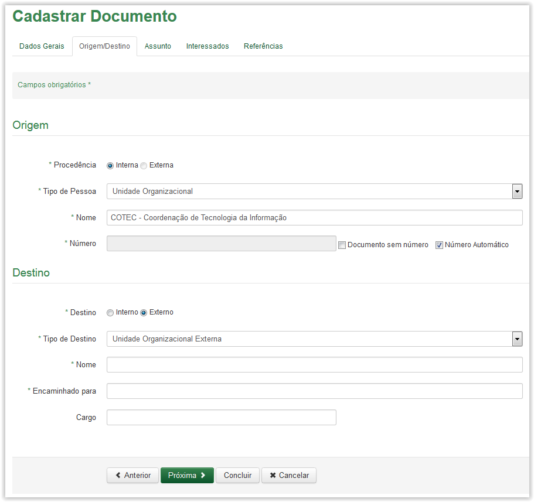
Após selecionar o Tipo de Destino como Unidade Organizacional Externa, o sistema apresenta os campos Nome, Encaminhado Para e Cargo
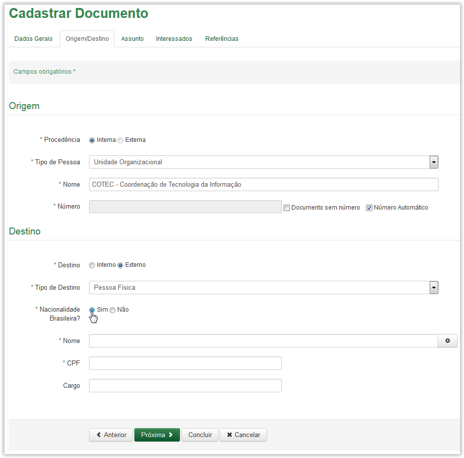
Selecionando a nacionalidade da Pessoa Física
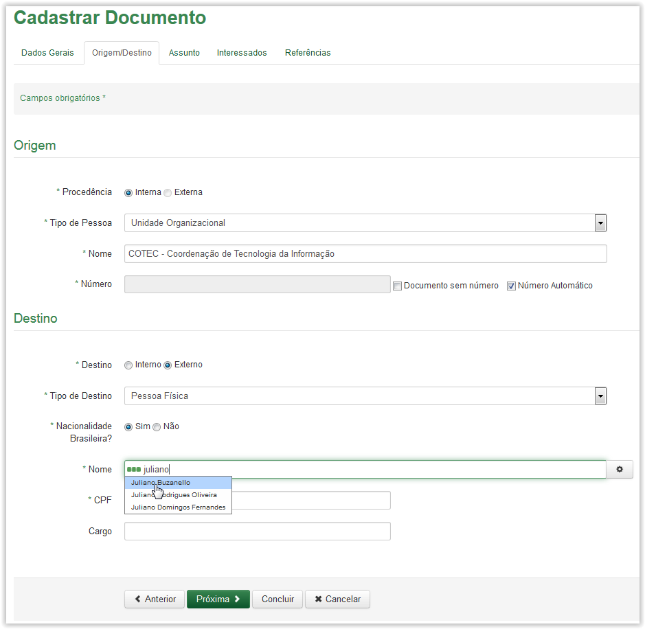
Selecionando um Nome na lista para preencher campo Nome
Observação: Caso o nome procurado não seja apresentado na lista de opções do campo, o sistema apresenta a seguinte mensagem:

Neste caso, utilize o ícone  para efetuar o cadastro dessa pessoa e a partir daí o sistema poderá listá-lo das próximas vezes. (Veja Nota 7):
para efetuar o cadastro dessa pessoa e a partir daí o sistema poderá listá-lo das próximas vezes. (Veja Nota 7):

Ícone Opções para cadastro de pessoa física
Logo após efetuar o cadastro, digite novamente o nome no campo para que ele seja exibido na lista:
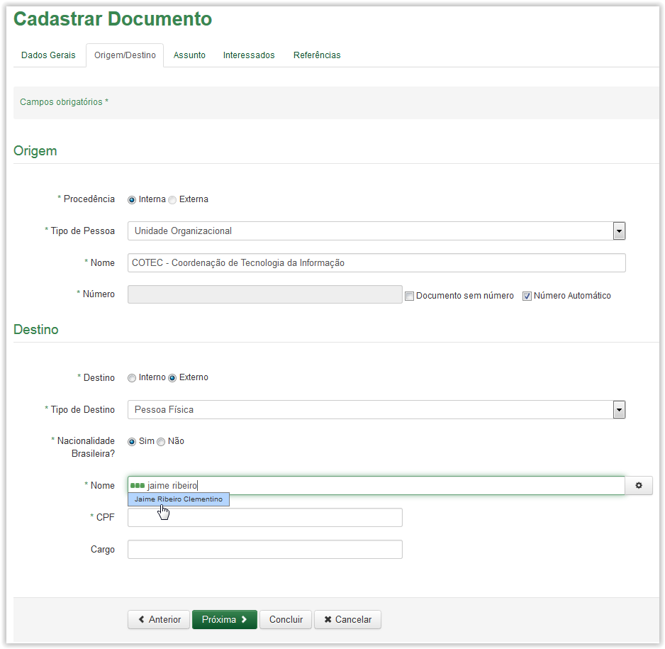
Selecionando o nome na lista após ter sido cadastrado

Preenchimento automático do CPF após informado o campo Nome
Observação: Caso o CPF informado não seja de uma pessoa cadastrada, o sistema apresenta a seguinte mensagem:

Mensagem de alerta de CPF não cadastrado
Clique no botão  e da mesma forma como foi explicado para o Nome, no caso do CPF também, utilize o ícone para efetuar o cadastro dessa pessoa e a partir daí o sistema poderá listá-lo das próximas vezes. (Veja Nota 7).
e da mesma forma como foi explicado para o Nome, no caso do CPF também, utilize o ícone para efetuar o cadastro dessa pessoa e a partir daí o sistema poderá listá-lo das próximas vezes. (Veja Nota 7).
para apresentar a próxima aba:
Aba Origem/Destino toda preenchida - Destino Externo-Pessoa Física

Selecionando um Nome na lista para preencher campo Nome
Observação: Caso o nome procurado não seja apresentado na lista de opções do campo, o sistema apresenta a seguinte mensagem:

Neste caso, utilize o ícone para efetuar o cadastro dessa pessoa jurídica e a partir daí o sistema poderá listá-lo das próximas vezes. (Veja Nota 9):

Ícone Opções para cadastro de pessoa jurídica
Logo após efetuar o cadastro, digite novamente o nome no campo para que ele seja exibido na lista:
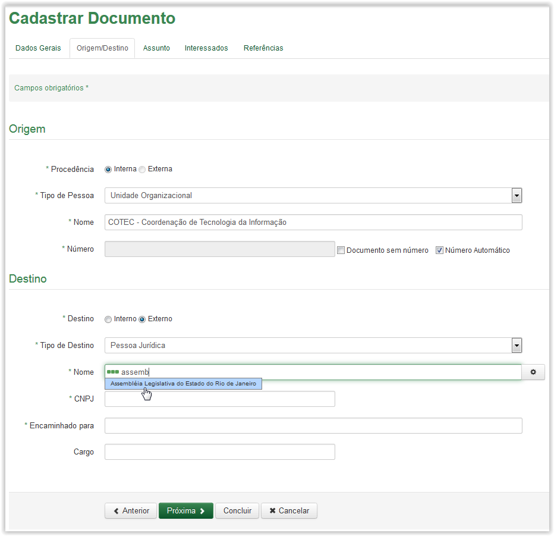
Selecionando o nome na lista após ter sido cadastrado

Preenchimento automático do CNPJ após informado o campo Nome
Observação: Caso o CNPJ informado não seja de uma pessoa jurídica cadastrada, o sistema apresenta a seguinte mensagem:

Mensagem de alerta de CNPJ não cadastrado
Clique no botão e da mesma forma como foi explicado para o Nome, no caso do CNPJ também, utilize o ícone para efetuar o cadastro dessa pessoa jurídica e a partir daí o sistema poderá listá-la das próximas vezes. (Veja Nota 9).

Selecionando o nome na lista do campo Encaminhado Para
para apresentar a próxima aba:
Aba Origem/Destino toda preenchida - Destino Externo-Pessoa Jurídica

Selecionando uma Unidade Organizacional Externa na lista para preencher campo Nome

Selecionando o nome na lista do campo Encaminhado Para
para apresentar a próxima aba:
Aba Origem/Destino toda preenchida - Destino Externo-Unidade Organizacional Externa
Após preencher a aba Origem/Destino e clicar no botão Próxima, o sistema apresenta a aba Assunto: Observe que alguns campos são obrigatórios (Veja Nota 10):
Cadastrar Documento - Aba Assunto
Informações para cadastro de documento - Aba Assunto:
Assunto: |
|
Assunto Complementar: |
|
Assinatura: |
|
Cargo: |
|
Prazo do Documento: |
|
Prioridade: |
|
Descrição da Prioridade: |
 Preenchendo a aba Assunto do cadastro de documento!!
Preenchendo a aba Assunto do cadastro de documento!!
Selecionando um valor na lista do campo Assunto
Preenchendo o campo Assunto
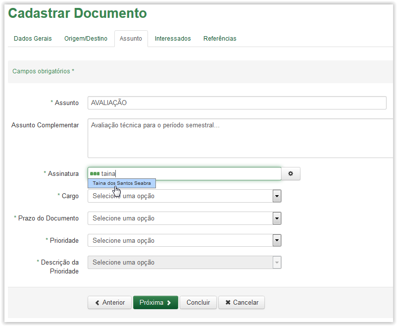
Selecionando um nome na lista Assinatura
Selecionando um cargo na lista do campo Cargo
Selecionando um tipo de prazo no campo Prazo do Documento
Após selecionar o item Data no campo Prazo do Documento o sistema apresenta o campo Data do Prazo
Após selecionar o item Dias no campo Prazo do Documento o sistema apresenta os campos Dias e Qtde Dias
Selecionando a data no calendário para preencher o campo Data do Prazo
Selecionando uma prioridade na lista do campo Prioridade
(CAPTURAR A IMAGEM DE NOVO QUANDO ATUALIZADO EM TCTI)
Selecionando um item na lista do campo Descrição da Prioridade
para apresentar a próxima aba:(CAPTURAR A IMAGEM DE NOVO QUANDO ATUALIZADO EM TCTI)
Clicando no botão Próxima após preenchimento da Aba Assunto
Após preencher a aba Assunto e clicar no botão Próxima, o sistema apresenta a aba Interessados:
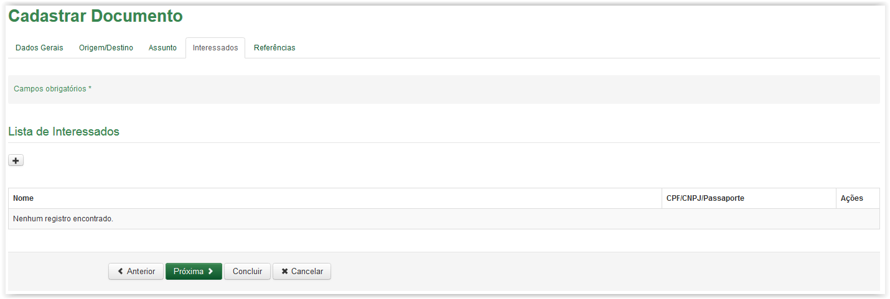
Cadastrar Documento - Aba Interessados
Clique no ícone  para Adicionar um Interessado:
para Adicionar um Interessado:

Clicando no ícone para adicionar um interessado
A tela Adicionar Interessado será apresentada:

Adicionar Interessado
Selecione a opção Interno no campo Interessado. Observe que alguns campos são obrigatórios (Veja Nota 11):

Selecionando a opção Interno campo Interessado
Informações para cadastro de documento - Aba Interessados:
Interessado: |
|
Tipo de Pessoa: |
|
Unidade do ICMBio: |
|
Funcionário do ICMBio: |
 Preenchendo a aba Interessados do cadastro de documento!!
Preenchendo a aba Interessados do cadastro de documento!!
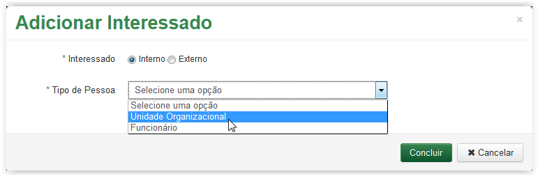
Selecionando um valor no campo Tipo de Pessoa
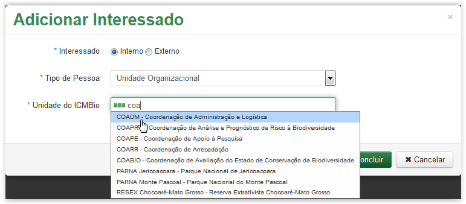
Selecionando um valor no campo Unidade do ICMBio
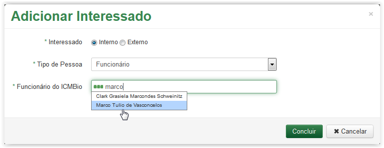
Selecionando um valor no campo Funcionário do ICMBio
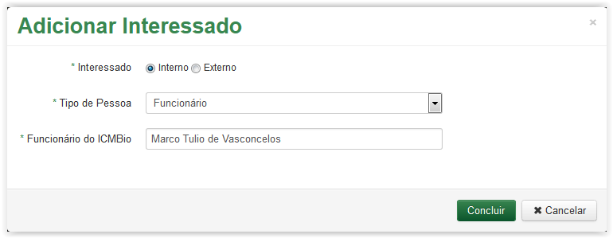
Cadastro de Interessado Interno - Tipo de Pessoa Funcionário todo preenchido

Mensagem de sucesso
 o sistema retorna para a Lista de Interessados.
o sistema retorna para a Lista de Interessados.Selecione a opção Externo no campo Interessado. Observe que alguns campos são obrigatórios (Veja Nota 12):

Selecionando a opção Externo campo Interessado
Informações para cadastro de documento - Aba Interessados:
Interessado: |
|
Tipo de Pessoa: |
|
Nacionalidade Brasileira: |
|
Nome: |
|
CPF: |
|
Nº do Passaporte: |
|
Razão Social: |
|
CNPJ: |
 Preenchendo a aba Interessados do cadastro de documento!!
Preenchendo a aba Interessados do cadastro de documento!!

Selecionando uma opção no campo Tipo de Pessoa

Ao selecionar o Tipo de Pessoa Física o sistema apresenta os campos Nacionalidade Brasileira, Nome e CPF

Selecionando a opção Sim da Nacionalidade Brasileira
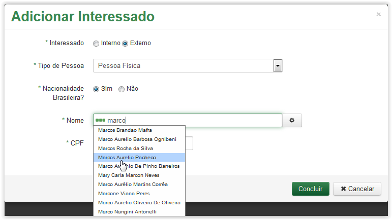
Selecionando um nome na lista Nome
Observação: Caso o nome procurado não seja apresentado na lista de opções do campo, siga as instruções conforme Nota 7

Cadastro de Interessado Externo - Pessoa Física toda preenchido
Observação: Caso o CPF informado não seja de uma pessoa cadastrada, siga as instruções conforme Nota 7
Mensagem de sucesso
o sistema retorna para a Lista de Interessados.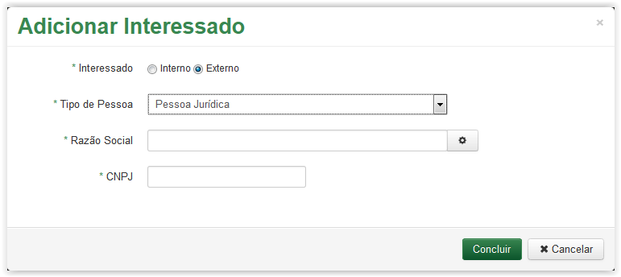
Cadastro de Interessado Externo - Pessoa Jurídica
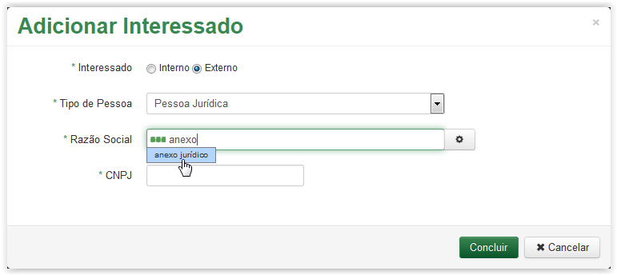
Selecionando um item na lista do campo Razão Social
Observação: Caso o nome procurado não seja apresentado na lista de opções do campo, siga as instruções conforme Nota 9
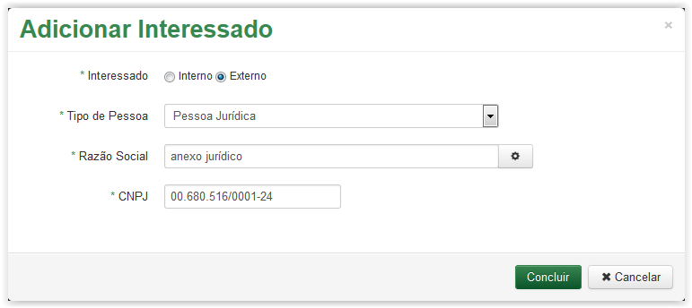
Cadastro de Interessado Externo - Pessoa Jurídica toda preenchido
Observação: Caso o CNPJ informado não seja de uma pessoa cadastrada, siga as instruções conforme Nota 9
Mensagem de sucesso
o sistema retorna para a Lista de Interessados.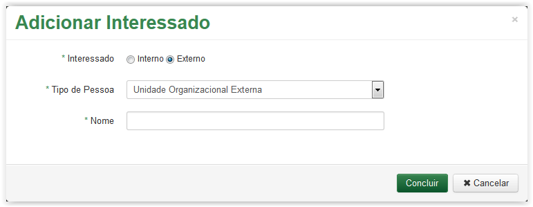
Cadastro de Interessado Externo - Unidade Organizacional Externa

Selecionando um item na lista Nome

Cadastro de Interessado Externo - Unidade Organizacional Externa todo preenchido
Mensagem de sucesso
o sistema retorna para a Lista de Interessados.Os interessados cadastrados são apresentados na Lista de Interessados:
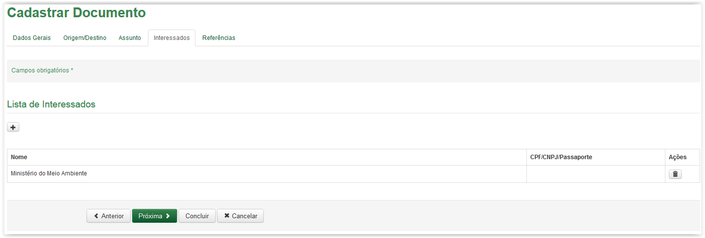
Cadastro de Documento - Aba Interessados - Lista de Interessados
Se desejar excluir algum interessado, clique no ícone  :
:
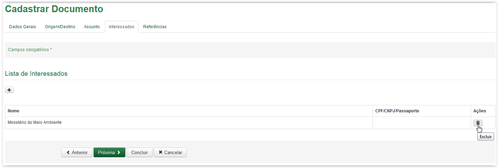
Clicando no ícone para excluir o interessado
Se desejar excluir algum interessado, clique no ícone . Uma mensagem de confirmação é apresentada::

Mensagem de confirmação
Se não desejar excluir o interessado, clique no botão  . Caso contrário, clique no botão
. Caso contrário, clique no botão  .
.
Ao confirmar a exclusão o sistema retira o interessado da Lista de Interessados.
Após preencher a aba Interessados e clicar no botão Próxima, o sistema apresenta a aba Referências:

Cadastrar Documento - Aba Referências
Clique no ícone para Adicionar Referências:
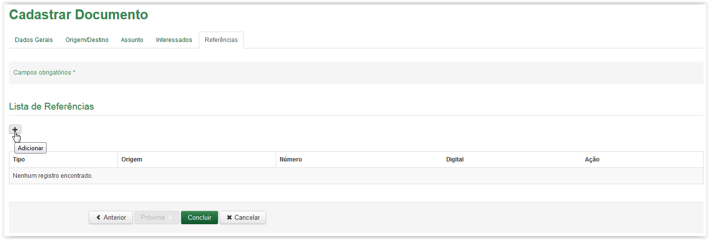
Clicando no ícone para adicionar uma referência
A tela Adicionar Referência será apresentada:

Adicionar Referência
Informações para cadastro de documento - Aba Referências:
Interessado: |
|
Tipo de Pessoa: |
|
Unidade do ICMBio: |
|
Funcionário do ICMBio: |
 Preenchendo a aba Referências do cadastro de documento!!
Preenchendo a aba Referências do cadastro de documento!!

Selecionando a opção Documento campo Tipo

Selecionando um valor no campo Tipo de Documento

Selecionando um item na lista do campo Digital
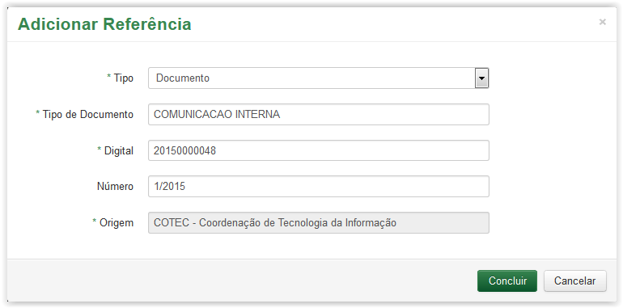
Preenchimento dos campos Número e Origem após a seleção da digital no campo Digital
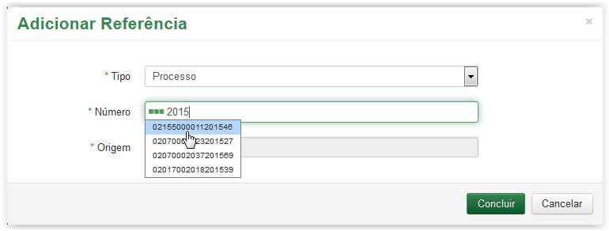
Selecionando um número no campo Número
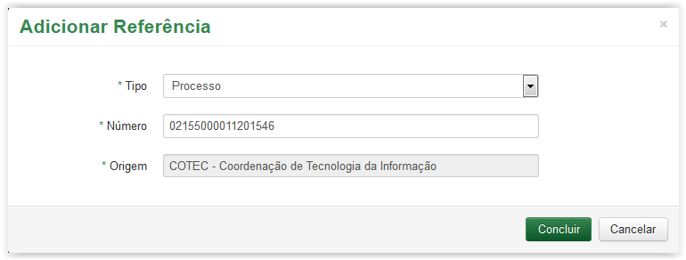
Preenchimento dos campos Origem após a seleção do número no campo Número
PAREI AQUI
 Notas e
Notas e  Lembretes
Lembretes
 Nota 1:
Nota 1:
Os campos obrigatórios são indicados pelo sinal de asterisco (*) na cor verde ao lado do nome. Quando algum ou nenhum campo obrigatório for preenchido, o sistema apresenta uma mensagem de erro: "Campos de preenchimento obrigatório não foram preenchidos.".
Comportamento da tela de Cadastro de Documento - Aba Dados Gerais, após clicar no botão Próxima sem preencher os campos obrigatórios.
 Nota 2:
Nota 2:
Nos campos de Data, ao clicar no ícone o sistema apresenta um calendário:

Calendário
O calendário é exibido apresentando o mês e ano atuais  , além do dia corrente
, além do dia corrente  . Utilize as setinhas
. Utilize as setinhas  para navegar entre os meses (anteriores e posteriores) e clique no dia desejado
para navegar entre os meses (anteriores e posteriores) e clique no dia desejado  para que o campo de data seja preenchido:
para que o campo de data seja preenchido:

Preenchimento do campo de Data
 Nota 3:
Nota 3:
Os campos obrigatórios são indicados pelo sinal de asterisco (*) na cor verde ao lado do nome. Quando algum ou nenhum campo obrigatório for preenchido, o sistema apresenta uma mensagem de erro: "Campos de preenchimento obrigatório não foram preenchidos.".

Comportamento da tela de Cadastro de Documento - Aba Origem/Destino, após clicar no botão Próxima sem preencher os campos obrigatórios.
 Nota 4:
Nota 4:
Os campos obrigatórios são indicados pelo sinal de asterisco (*) na cor verde ao lado do nome. Quando algum ou nenhum campo obrigatório for preenchido, o sistema apresenta uma mensagem de erro: "Campos de preenchimento obrigatório não foram preenchidos.".
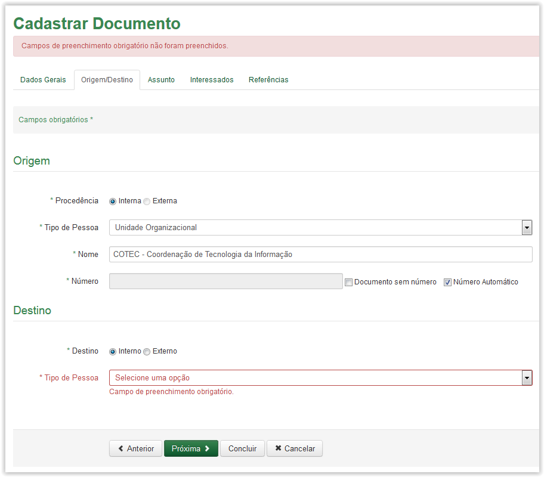
Comportamento da tela de Cadastro de Documento - Aba Origem/Destino, após clicar no botão Próxima sem preencher os campos obrigatórios do Destino Interno do documento.
 Nota 5:
Nota 5:
Os campos obrigatórios são indicados pelo sinal de asterisco (*) na cor verde ao lado do nome. Quando algum ou nenhum campo obrigatório for preenchido, o sistema apresenta uma mensagem de erro: "Campos de preenchimento obrigatório não foram preenchidos.".
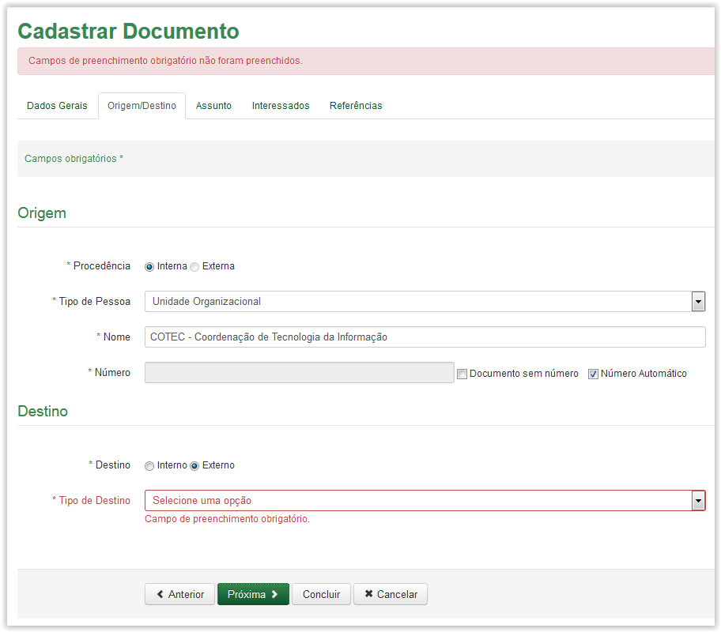
Comportamento da tela de Cadastro de Documento - Aba Origem/Destino, após clicar no botão Próxima sem preencher os campos obrigatórios do Destino Externo do documento.
 Nota 6:
Nota 6:
A única diferença que existe no preenchimento do cadastro quando se tratar de Brasileiro ou Estrangeiro é que na primeira opção, ou seja, ao selecionar Nacionalidade Brasileira como Sim, o sistema apresenta o campo CPF. No entanto, tratando-se da segunda opção, ou seja, ao selecionar Nacionalidade Brasileira como Não, o sistema apresenta o campo Passaporte em vez do campo CPF (veja as imagens abaixo):
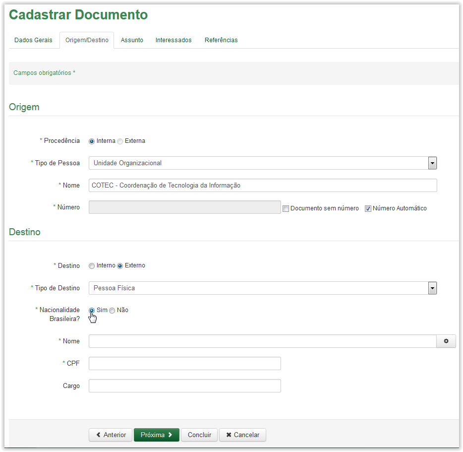
Selecionando a opção Sim no campo Nacionalidade Brasileira: o campo CPF é apresentado logo abaixo do campo Nome

Selecionando a opção Não no campo Nacionalidade Brasileira: o campo Nº do Passaporte é apresentado logo abaixo do campo Nome
 Nota 7:
Nota 7:
Para cadastrar uma pessoa física, clique no ícone . Logo após, clique na opção Cadastrar, que será apresentada:
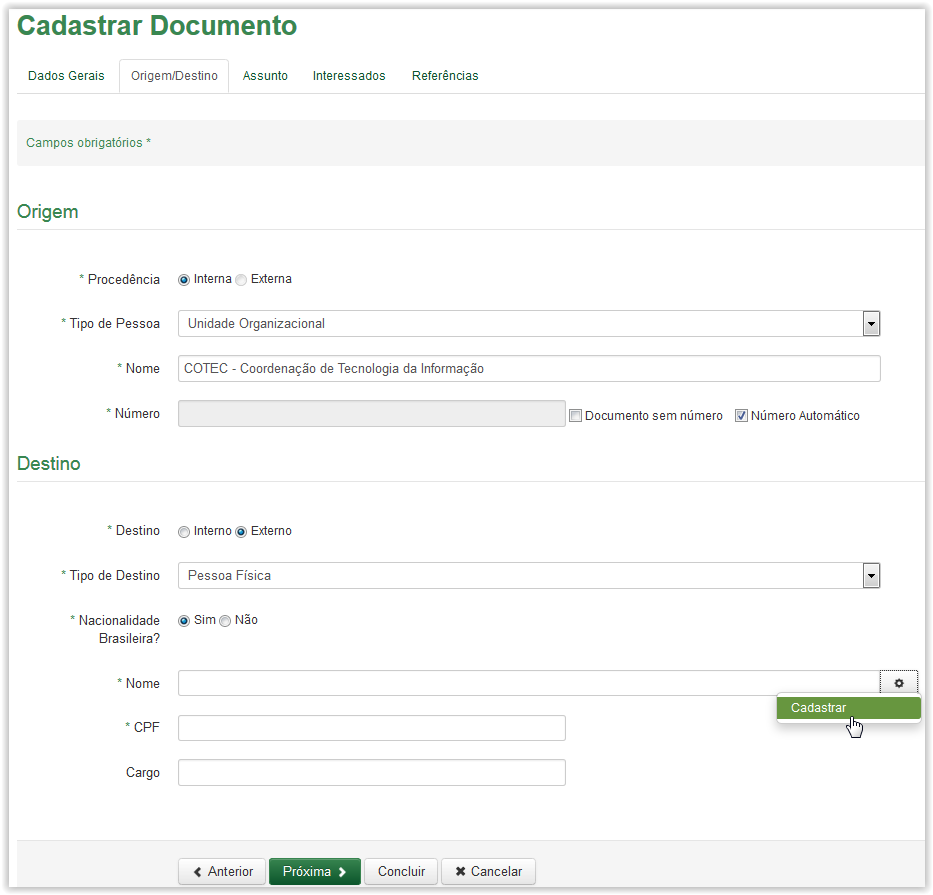
Selecionando opção para cadastrar pessoa física
O sistema exibe uma outra aba no seu browser com a tela Cadastrar Pessoa Física, por meio da qual devem ser informados os dados solicitados:

Tela Cadastrar Pessoa Física
Finalize o cadastro clicando no botão  . Será apresentada a seguinte mensagem:
. Será apresentada a seguinte mensagem:

Mensagem de sucesso
 Nota 8:
Nota 8:
A mesma situação acontece para estrangeiro, ou seja:
 Nota 9:
Nota 9:
Para cadastrar uma pessoa jurídica, clique no ícone . Logo após, clique na opção Cadastrar, que será apresentada:
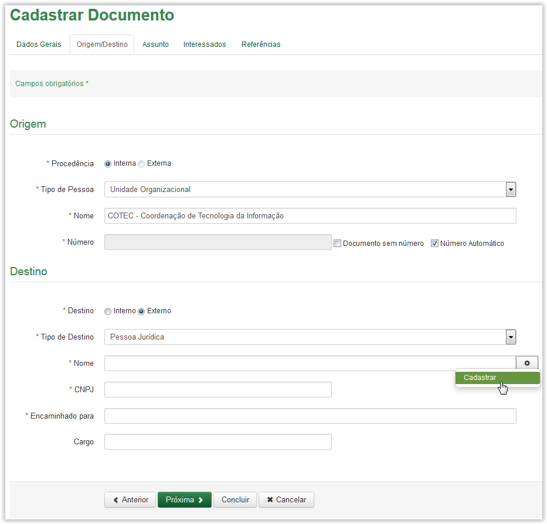
Selecionando opção para cadastrar pessoa jurídica
O sistema exibe uma outra aba no seu browser com a tela Cadastrar Pessoa Jurídica, por meio da qual devem ser informados os dados solicitados:

Tela Cadastrar Pessoa Jurídica
Finalize o cadastro clicando no botão . Será apresentada a seguinte mensagem:
Mensagem de sucesso
 Nota 10:
Nota 10:
Os campos obrigatórios são indicados pelo sinal de asterisco (*) na cor verde ao lado do nome. Quando algum ou nenhum campo obrigatório for preenchido, o sistema apresenta uma mensagem de erro: "Campos de preenchimento obrigatório não foram preenchidos.".
Comportamento da tela de Cadastro de Documento - Aba Assunto, após clicar no botão Próxima sem preencher os campos obrigatórios.
 Nota 11:
Nota 11:
Os campos obrigatórios são indicados pelo sinal de asterisco (*) na cor verde ao lado do nome. Quando algum ou nenhum campo obrigatório for preenchido, o sistema apresenta uma mensagem de erro: "Campos de preenchimento obrigatório não foram preenchidos.".

Comportamento da tela Adicionar Interessado - Interno, após clicar no botão Concluir sem preencher os campos obrigatórios.
 Nota 12:
Nota 12:
Os campos obrigatórios são indicados pelo sinal de asterisco (*) na cor verde ao lado do nome. Quando algum ou nenhum campo obrigatório for preenchido, o sistema apresenta uma mensagem de erro: "Campos de preenchimento obrigatório não foram preenchidos.".

Comportamento da tela Adicionar Interessado - Externo, após clicar no botão Concluir sem preencher os campos obrigatórios.
 Nota 13:
Nota 13:
A única diferença que existe no preenchimento do cadastro quando se tratar de Brasileiro ou Estrangeiro é que na primeira opção, ou seja, ao selecionar Nacionalidade Brasileira como Sim, o sistema apresenta o campo CPF. No entanto, tratando-se da segunda opção, ou seja, ao selecionar Nacionalidade Brasileira como Não, o sistema apresenta o campo Passaporte em vez do campo CPF (veja as imagens abaixo):
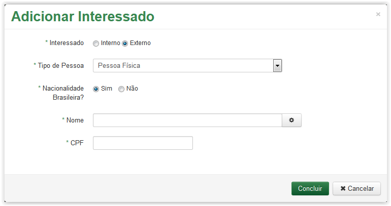
Selecionando a opção Sim no campo Nacionalidade Brasileira: o campo CPF é apresentado logo abaixo do campo Nome
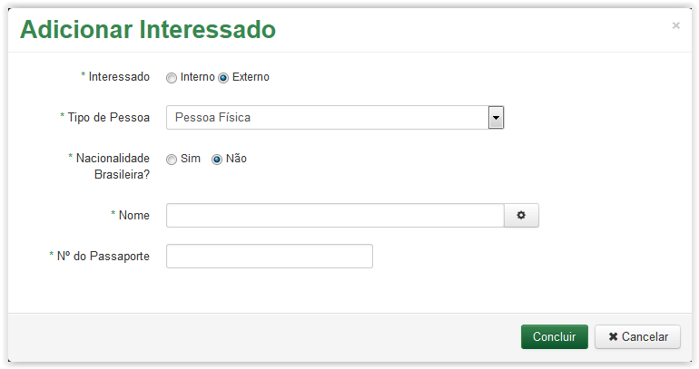
Selecionando a opção Não no campo Nacionalidade Brasileira: o campo Nº do Passaporte é apresentado logo abaixo do campo Nome
Created with the Personal Edition of HelpNDoc: Single source CHM, PDF, DOC and HTML Help creation